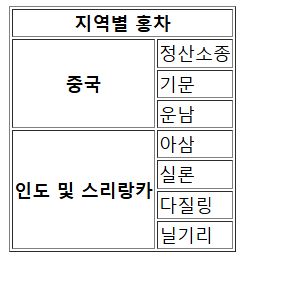
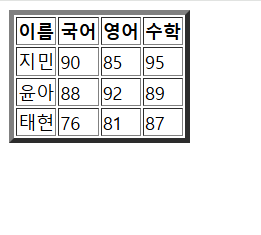

기본 태그 중 하나인 테이블 태그는 표를 만드는 데 쓰인다.
table: 표를 삽입한다. 아래 태그들은 모두 table 태그 안에 있어야 한다.
tr: table row로 표의 행을 만든다.
th: table heading로 표에서 열이나 행의 제목이나 주제를 나타낸다.
td: table data로 표의 각 셀의 데이터를 만든다.
table에는 다음과 같은 속성이 있다.
table의 border 속성: 표의 테두리 두께
th, td의 colspan 속성: 셀의 너비 지정
th, td의 rowspan 속성: 셀의 높이 지정
예시를 통해 이해해 보자.
<!--테이블 태그-->
<!DOCTYPE html>
<html>
<head>
<title>테이블 태그</title>
<style type="text/css">
</style>
</head>
<body>
<table border="1">
<tr>
<th colspan="2">지역별 홍차</th>
</tr>
<tr>
<th rowspan="3">중국</th>
<td>정산소종</td>
</tr>
<tr><td>기문</td></tr>
<tr><td>운남</td></tr>
<tr>
<th rowspan="4">인도 및 스리랑카</th>
<td>아삼</td>
</tr>
<tr><td>실론</td></tr>
<tr><td>다질링</td></tr>
<tr><td>닐기리</td></tr>
</table>
</body>
</html>

table태그의 border 속성으로 표의 테두리 두께를 설정하였다. 이게 없으면 선이 없다.
colspan과 rowspan 속성을 통해 td 또는 th의 너비나 높이를 조정할 수 있다.
이 외에도 thead와 tbody 태그를 통해 구조를 나누면 더 보기 좋다.
th가 있는 행을 thead 안에 넣는 식이다.
다음 예시를 참고하자.
<!DOCTYPE html>
<html lang="ko">
<head>
<meta charset="UTF-8">
<title>테이블 태그2</title>
</head>
<body>
<table border="5">
<thead>
<tr>
<th>이름</th>
<th>국어</th>
<th>영어</th>
<th>수학</th>
</tr>
</thead>
<tbody>
<tr>
<td>지민</td>
<td>90</td>
<td>85</td>
<td>95</td>
</tr>
<tr>
<td>윤아</td>
<td>88</td>
<td>92</td>
<td>89</td>
</tr>
<tr>
<td>태현</td>
<td>76</td>
<td>81</td>
<td>87</td>
</tr>
</tbody>
</table>
</body>
</html>
